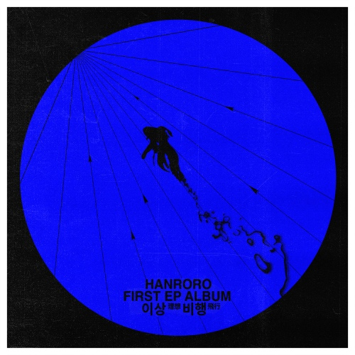

최근 다양한 반려동물에 대한 관심이 증가하면서, 물고기 중 유명한 금붕어를 키우는 사람이 늘어난 만큼, 새롭게 떠오르는 문제가 있습니다. 바로 유기동물 관련 문제입니다.
다양한 동물들이 버려지면서 생태계를 교란시키는 종들도 늘어납니다.
금붕어도 유기동물문제에서 제외되진 못했습니다.
미국의 미네소타주 호수에서 방류된 금붕어가 호수에 적응하며 아주 거대해 진 사건이 있습니다.
금붕어는 적응력이 좋고, 먹성이 좋은 생물인 만큼 배설량 또한 많은데요, 이러한 방류사례가 더 많아진다면 수질오염, 자생종 개체수 하락등의 문제가 야기될 수 있습니다
한로로-'금붕어'

남들의 시선을 깨고 자신의 '이상'을 향해 가는 사람을 어항속 금붕어에 비유하여 표현한 노래